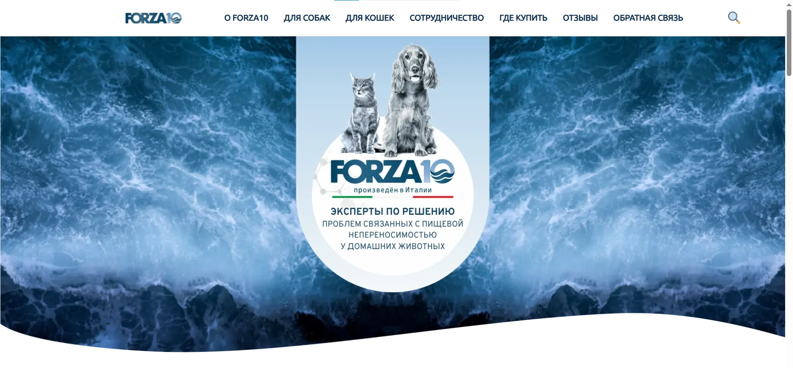
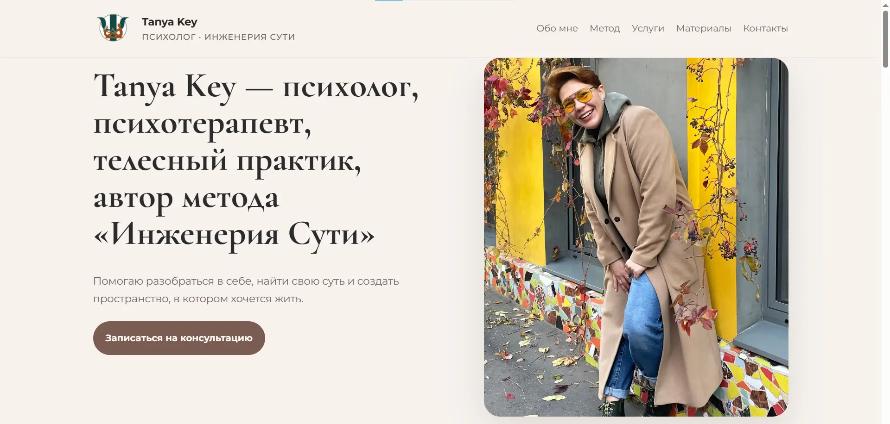

Forza10 — интернет-каталог
Коммерческий сайт с нуля для бренда ветеринарных кормов. Без макета — от референсов и словесного ТЗ.
Fullstack, верстка с нуля, правки и доработка проектов, WordPress и 1С-Битрикс.
Собираю сайты с нуля, переношу статику в CMS, дорабатываю существующие проекты на WordPress и 1С-Битрикс. Есть опыт коммерческой разработки — от верстки по референсам до настройки CMS и интеграций.
Умею разбираться в чужом коде: находить неочевидные баги, конфликты плагинов, проблемы с адаптивностью. Спокойно работаю с меняющимися требованиями и правками по ходу проекта.
Сейчас развиваю собственный инструмент для разработчиков — ИИ-среду, которая анализирует кодовую базу, находит зависимости между файлами и помогает быстро локализовать баги.
Адаптивная верстка по макету или референсам. HTML, CSS, JavaScript. Пиксель-в-пиксель, быстро, с проверкой на всех устройствах.
от 5 000 ₽Исправление верстки, адаптива, багов, конфликтов плагинов. Работа с чужим кодом без вопросов «а почему так написано».
от 500 ₽Создание и доработка сайтов, кастомные темы, настройка ACF, форм, интеграций. Обучение заказчика работе с CMS.
от 3 000 ₽Разработка и доработка сайтов, каталогов, настройка компонентов, интеграция шаблонов, кастомные решения.
от 5 000 ₽
Коммерческий сайт с нуля для бренда ветеринарных кормов. Без макета — от референсов и словесного ТЗ.

Перенос статичного сайта в WordPress, решение проблем чужого кода, настройка CMS для самостоятельного ведения.
Зависит от задачи. Верстка лендинга — от 5 000 ₽, правки — от 500 ₽, доработка на CMS — от 3 000 ₽. Точную цену скажу после обсуждения задачи. Напишите в Telegram — разберём.
Небольшие правки — 1–2 дня. Верстка или крупные доработки — обсуждаем сроки индивидуально. Обычно беру на себя реалистичные сроки и не срываю их.
Да, это одна из моих сильных сторон. Разбираюсь в проектах, оставшихся от других разработчиков: нахожу баги, конфликты плагинов, проблемы с адаптивом. Аккуратно правлю, не ломая существующее.
Обсуждаем задачу в Telegram, я оцениваю сроки и стоимость. Работаю по предоплате 50% или поэтапной оплате. Все детали обсуждаем до старта — никаких сюрпризов в процессе.
Да. Если после сдачи обнаружатся баги, которые появились из-за моих правок — исправлю бесплатно в течение двух недель. Это стандартная практика для аккуратной работы.
Открыт к новым проектам: верстка, правки, доработка сайтов на WordPress и 1С-Битрикс. Пишите в Telegram — отвечу быстро.